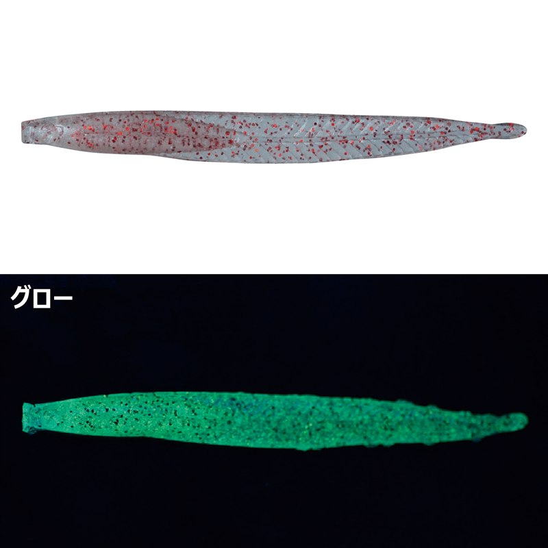
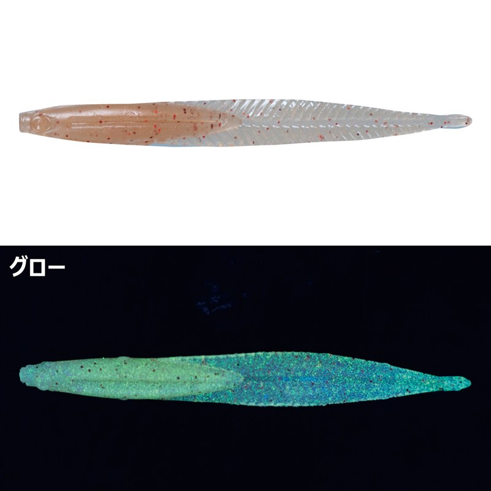
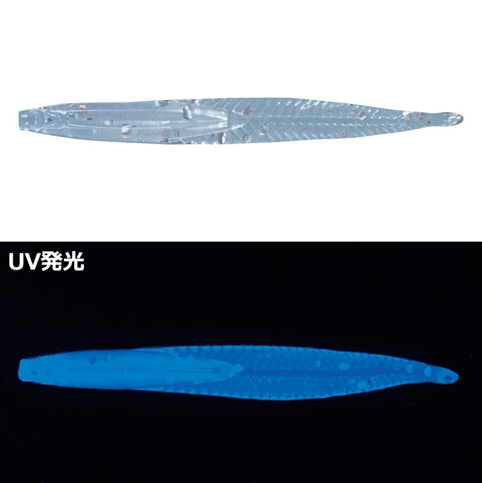
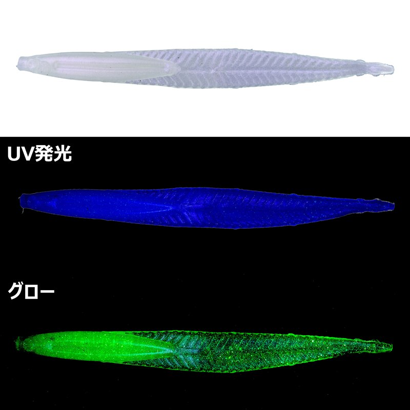

宵姫 ノレソレ1.8インチ
宵姫 ノレソレ1.8インチはがまかつ（LUXXE）のライトゲーム用ワームです。
ウナギやアナゴの幼生「レプトケファルス（ノレソレ）」をイミテートしたボディで、スモールボディに薄く扁平なフラットテールを組み合わせた1.8インチ。アジやメバルなどマイクロベイトを食べている魚に効く、ショートピッチのアクションと浮遊感が最大の魅力です。

画像出典:がまかつ公式HP
スペック
- メーカー
- gamakatsu（がまかつ）
- タイプ
- ワーム（ジグヘッドリグ）
- サイズ
- 1.8インチ
- 入数
- 8本
- 素材
- エラストマー
- ターゲット
- メバル・アジ
- 価格
- 605円（税込）
▼今すぐチェック

宵姫 ノレソレ1.8インチの特徴
ノレソレ（レプトケファルス）をイミテートした、マイクロベイトイーター用ワーム
-
フラットテールのショートピッチアクション
スモールボディに薄く扁平なフラットテールの組み合わせで、上下に波打つテールの動きや、ボディをヒラリとひるがえすスライドアクションを出す。アジやメバルなど、マイクロベイトを食べている魚に効く動き。
-
フォールで効く浮遊感
フラットテールはフォール時にブレーキの役割を果たし、スローな操作がしやすい。フォールやドリフトで絶妙な浮遊感を出して、バイトを誘う。
-
まっすぐ刺せるQ.S.S.構造
ワームにスリットを設けた「Q.S.S.構造」で、かんたんにまっすぐフックにセットできる。バイト時にワームが折れ曲がって吸い込みをアシストし、ボディが前にスライドしてフックが出るのでバラシも減らせる。弾力があり丈夫なエラストマー素材。
宵姫 ノレソレ1.8インチの使い方
ジグヘッドにまっすぐ刺してキャストし、狙いのレンジまで沈めたら、スローなリフト&フォールやドリフトで誘うのが基本。フラットテールがブレーキになってゆっくり沈むので、フォール中のアタリに集中しましょう。
ただ巻きでは、テールが上下に波打つショートピッチのアクションが出ます。軽く竿をあおると、ボディがヒラリとひるがえるスライドアクションで食わせの間を作れます。
宵姫 ノレソレ1.8インチの得意な状況
常夜灯まわりで、メバルやアジがアミやシラスなどの小さなベイトを食べている状況が最大の出番。
潮の流れがある場所でドリフトさせたい時や、フォールをゆっくり見せたい時にも選びたい1本です。
小さなシルエットと浮遊感で、マイクロベイトを食べている魚がよく釣れるワームです。
ワンポイント
Q.S.S.構造のスリットに沿ってフックを刺すと、まっすぐセットしやすくなります。ワームを横向きに使うと、フラットテールの水受けがよくなり、アピールを強められます。
同じ宵姫シリーズのジグヘッド宵姫ステルスグライドと組み合わせると、静かなフォールでさらにじっくり見せられます。
ノレソレシリーズの使い分け
| モデル | 素材・価格 | 得意な場面 |
|---|---|---|
| ノレソレ1.8インチ | エラストマー・605円（税込） | アジ・メバルのマイクロベイトパターン。小さく見せたい時（本記事のモデル） |
| ノレソレ3インチ | ソフトタイプPVC・550円（税込） | シークレットブレンドフレーバー配合。大きめのシルエットで見せたい時に |
ノレソレには1.8インチと3インチがあります。アジやメバルが小さなベイトを食べている時は1.8インチ、シルエットを大きくしてアピールしたい時は3インチと使い分けます。カラーのラインナップも異なります。
人気カラー
宵姫 ノレソレ1.8インチはグロー・UV入りを中心に展開。その中から人気カラーを紹介します。

クリアアミグロークリアに赤ラメのアミカラーで、グロー入り。常夜灯まわりのアミパターンの基準に。

オキアミグローオキアミをイメージしたグロー入りのカラー。暗い場所でも存在感を出せる。

クリアUVシルバーラメクリアにシルバーラメとUV。澄み潮や朝夕マズメに。

クイーンオブザブルースグロー新しく加わったグロー入りのカラー。淡い色合いでナチュラルに見せたい時に。
画像出典:がまかつ公式HP
宵姫 ノレソレ1.8インチに似ているルアー
-
 宵姫ステルスグライド
がまかつ
詳細はこちら＞
宵姫ステルスグライド
がまかつ
詳細はこちら＞
同じ宵姫シリーズのジグヘッド。群れを散らさない静かなフォールで、ノレソレを合わせたい1本。
-
 月下美人 アジングビームFAT
ダイワ
詳細はこちら＞
月下美人 アジングビームFAT
ダイワ
詳細はこちら＞
1.5インチのアミパターン用ワーム。太いボディで水をつかみ、ドリフトやスローフォールに。
-
 クリルン
ブルーブルー
詳細はこちら＞
クリルン
ブルーブルー
詳細はこちら＞
水押しの強いファットI字の1.7インチ。メバルを巻きの釣りで狙いたい時に。